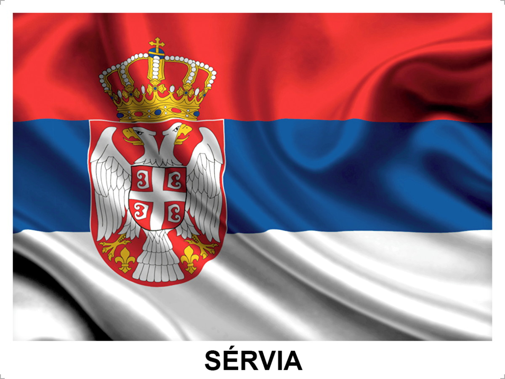
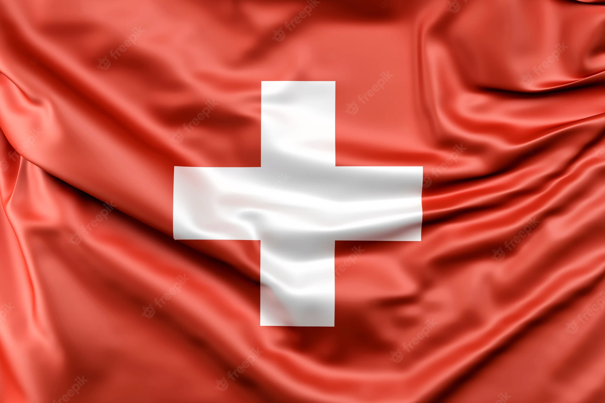

Brasil
O Brasil participou de todas as 19 edições da Copa;
tiveram o total de 5 títulos (1958, 1962, 1970, 1994 e 2002) e quem sabe consegue um sexto;
O time de 2022 inclue
1 Alisson, 12 Weverton, 23 Ederson.
2 Danilo, 3 Thiago Silva, 4 Marquinhos,6 Alex Sandro, 13 Dani Alves, 14 Éder Millitão, 16 Alex Telles, 24 Bremer.
5 Casemiro, 7 Lucas Paquetá, 8 Fred, 15 Fabinho, 17 Bruno Guimarães, 22 Éverton Ribeiro.
9 Richarlison, 10 Neymar, 11 Raphinha, 18 Gabriel Jesus, 19 Antony, 20 Vinicius Junior, 21 Rodrygo, 25 Pedro, 26 Gabriel Martinelli

Goleiros:
Marko Dmitrovic (Sevilla),Predrag Rajkovic (Mallorca),Vanja Milinkovic-Savic (Torino).
Defensores:
Stefan Mitrovic (Getafe),Nikola Milenkovic (Fiorentina),Strahinja Pavlovic (RB Salzburg),Milos Veljkovic (Werder Bremen),Filip Mladenovic (Legia Varsóvia),Strahinja Erakovic (Estrela Vermelha),Srdan Babic (Almería).
Meio-campistas:
Nemanja Gudelj (Sevilla),Segej Milinkovic-Savic (Lazio),Sasa Lukic (Torino),Marko Grujic (Porto),Filip Kostic (Juventus),Uros Racic (Braga),Nemanja Maksimovic (Napoli),Ivan Ilic (Hellas Verona),Andrija Zivkovic (PAOK),Darko Lazovic (Hellas Verona).
Atacantes:
Dusan Tadic (Ajax),Aleksandar Mitrovic (Fulham),Dusan Vlahovic (Juventus),Filip Duricic (Sampdoria),Luka Jovic (Fiorentina),Nemanja Radonjic (Torino).
A Sérvia teve 3 edições que participou(2010, 2018, 2022) e contém apenas 1 título
O time de 2022 inclue
Marko Dmitrovic (Sevilla),Predrag Rajkovic (Mallorca),Vanja Milinkovic-Savic (Torino).
Stefan Mitrovic (Getafe),Nikola Milenkovic (Fiorentina),Strahinja Pavlovic (RB Salzburg),Milos Veljkovic (Werder Bremen),Filip Mladenovic (Legia Varsóvia),Strahinja Erakovic (Estrela Vermelha),Srdan Babic (Almería).
Nemanja Gudelj (Sevilla),Segej Milinkovic-Savic (Lazio),Sasa Lukic (Torino),Marko Grujic (Porto),Filip Kostic (Juventus),Uros Racic (Braga),Nemanja Maksimovic (Napoli),Ivan Ilic (Hellas Verona),Andrija Zivkovic (PAOK),Darko Lazovic (Hellas Verona).
Dusan Tadic (Ajax),Aleksandar Mitrovic (Fulham),Dusan Vlahovic (Juventus),Filip Duricic (Sampdoria),Luka Jovic (Fiorentina),Nemanja Radonjic (Torino).

Goleiros:
Kobel (Borussia Dortmund),Köhn (RB Salzburg),Omlin (Montpellier),Sommer (Borussia Mönchengladbach)
Defensores:
Akanji (Manchester City),Comert (Valencia),Elvedi (Borussia Mönchengladbach),Fernandes (Mainz),Ricardo Rodríguez (Torino),Schär (Newcastle),Widmer (Mainz)
Meias e atacantes:
,Aebischer (Bologna),Embolo (Monaco),Fassnacht (Young Boys),Frei (Basel),Freuler (Nottingham Forest),Jashare (Lucerna),Okafor (RB Salzburg),Riedr (Young Boys),Seferovic (Galatasaray),Shaqiri (Chicago),Sow (Frankfurt),Steffen (Lugano),Vargas (Augsburg),Xhaka (Arsenal),Zakaria (Chelsea)
Suica
A Suíça participou de 12 edições (1934, 1938, 1950, 1954, 1962, 1966, 1994, 2006, 2010, 2014, 2018, 2022) porém não ganhou nenhum título
O time de 2022 inclue
Kobel (Borussia Dortmund),Köhn (RB Salzburg),Omlin (Montpellier),Sommer (Borussia Mönchengladbach)
Akanji (Manchester City),Comert (Valencia),Elvedi (Borussia Mönchengladbach),Fernandes (Mainz),Ricardo Rodríguez (Torino),Schär (Newcastle),Widmer (Mainz)
,Aebischer (Bologna),Embolo (Monaco),Fassnacht (Young Boys),Frei (Basel),Freuler (Nottingham Forest),Jashare (Lucerna),Okafor (RB Salzburg),Riedr (Young Boys),Seferovic (Galatasaray),Shaqiri (Chicago),Sow (Frankfurt),Steffen (Lugano),Vargas (Augsburg),Xhaka (Arsenal),Zakaria (Chelsea)

Camarões
Participou de 8 Copas do Mundo (1982, 1990, 1994, 1998, 2002, 2010, 2014 e 2022) e mesmo assim não tem nenhum título
O time de 2022 inclue
Onana (Inter de Milão), Epassy (Abha) e Ngapandouetnbu (Olympique de Marselha)
Nkoulou (Aris), Ebosse (Udinese), Tolo (Seattle Sounders), Mbaizo (Philadelphia Union), Fai (Al-Tai), Castelletto (Nantes), Wooh (Rennes) e Onguene (Eintracht Frankfurt)
Ondoa (Hannover), Gouet (Mechelen), Kunde (Olympiacos), Hongla (Verona), Anguissa (Napoli) e Ntcham (Swansea)
Nkoudou (Besiktas), Aboubakar (Al-Nassr), Mbeumo (Brentford), Nsame (Young Boys), Toko Ekambi (Lyon), Ngamaleu

Equipe G
jogo
Datas e Horarios
Estadios